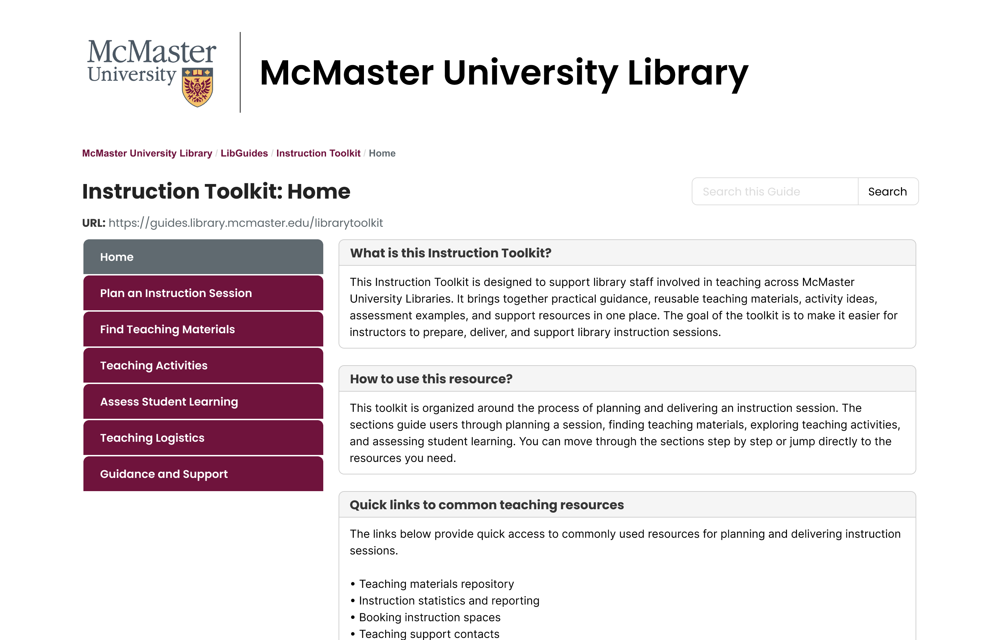
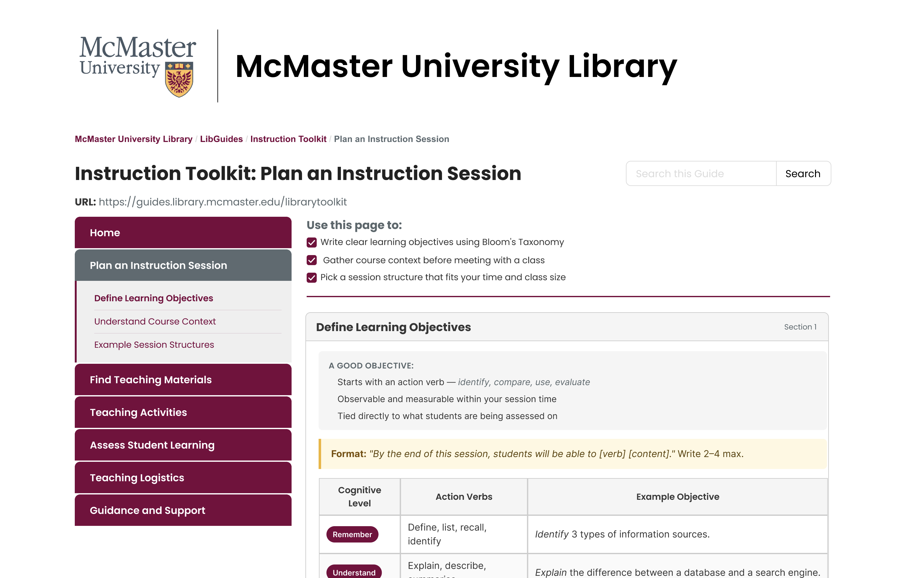
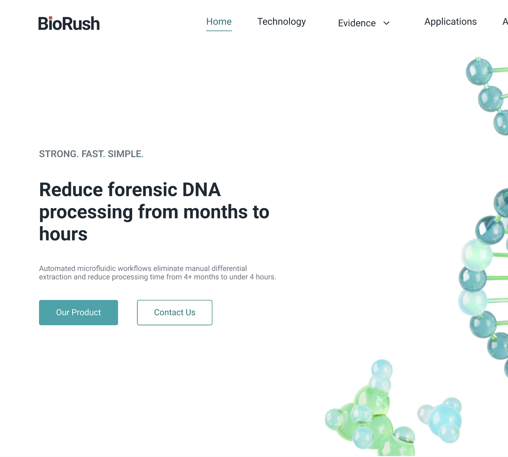
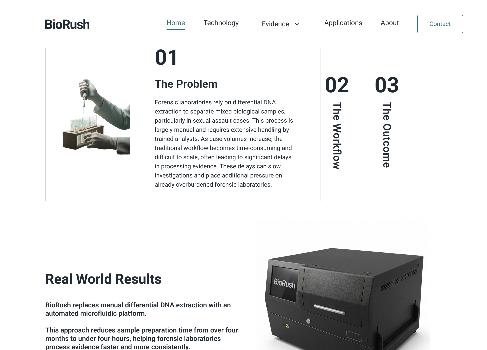
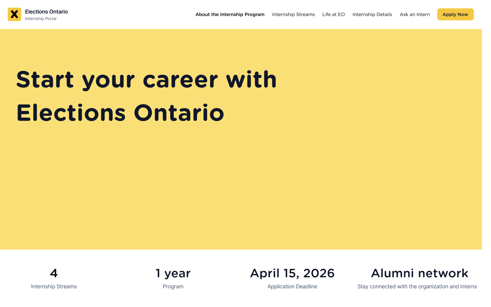
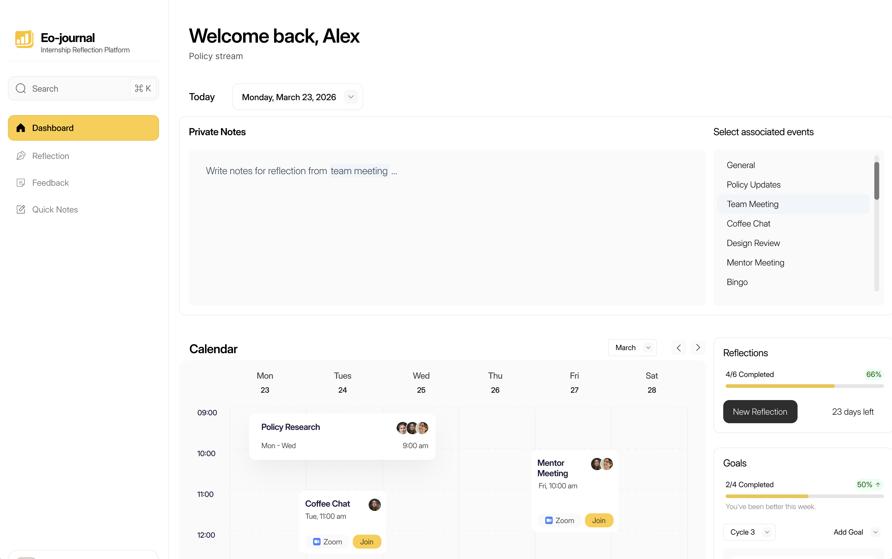

Institutional Digital Platform
麦克马斯特大学图书馆 — 数字化教学工具平台
面向高校图书馆馆员设计数字化教学资源平台。 项目覆盖用户研究、信息架构、交互设计与高保真原型， 通过梳理馆员的备课流程、资源使用习惯和信息检索需求， 将分散的教学资源整合为连贯、易查找且便于使用的数字工具包。



专注用户体验、数字产品与服务设计， 擅长从用户研究、信息架构到高保真交互设计， 通过设计思维与数据分析连接用户需求、组织目标与商业价值。
查看我的作品 ↓面向高校图书馆馆员设计数字化教学资源平台。 项目覆盖用户研究、信息架构、交互设计与高保真原型， 通过梳理馆员的备课流程、资源使用习惯和信息检索需求， 将分散的教学资源整合为连贯、易查找且便于使用的数字工具包。


为早期法医科技创业公司从零搭建官方网站。 项目涵盖背景调研、目标受众分析、信息架构、 内容策略、可信度表达和高保真界面设计。


系统梳理实习生从了解组织、搜索岗位、提交申请， 到实习期间学习成长的完整体验。 通过用户旅程和服务蓝图，设计 Search & Apply 与 EO Journal 两套高保真数字体验。


目前关注用户体验设计、数字产品设计、 用户研究与服务设计相关机会。 欢迎通过邮箱、LinkedIn 或简历中的联系方式与我联系。